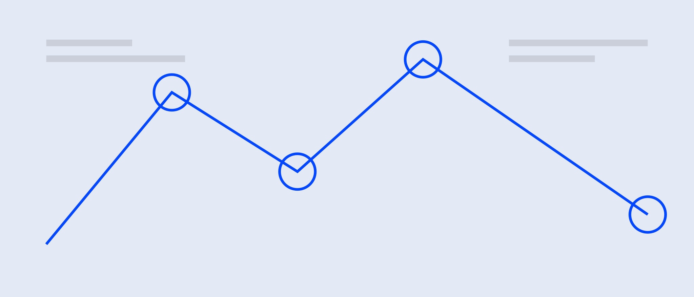

V5.4 / SWISS DECK
Swiss Deck + Asset Factory
A strict-grid web deck route with auditable visual assets before generation.
Style B demo / IKB anchor / local HTML
KPI TOWER
Choose Style A or Style B before template copy.
Plan every generated visual in asset_plan.json.
Validate Swiss layout locks before delivery.
Minimum body text is 18px; captions are 16px; meta labels are 14px.
DUO COMPARE
Before
A web deck could look Swiss but still invent structures, miss image slots, or hide asset provenance.
After
Every Swiss page has a registered layout, a clear asset slot, and a validator-backed QA path.
This page demonstrates comparison content without custom centered title hacks.
FLOW
Brief to asset to deck
project-brief.json
asset_plan.json
image_prompts.json
validated web deck
Generated status requires current_generation_evidence.
MAP COMPONENT
Place relations stay readable
Swiss Map pages use an S08 slot extension instead of an invented map poster.
Production pages can replace this with the full Swiss Map component.
IMAGE HERO
21:9 evidence slot

S22 hero visuals bind to data-image-slot and avoid top-center cropping.
ASSET FACTORY
21:9 no-text visual for S22.
16:10 framed evidence, never redrawn when fidelity matters.
Limited labels only when editability is not required.
Failed generation becomes Needs-Manual, not a broken deck.
CLOSING
可选 可验 可追溯
The release turns Swiss and images into production contracts.
TAKEAWAYS
Style route is explicit. Asset provenance is written before generation. Validation catches the expensive mistakes first.